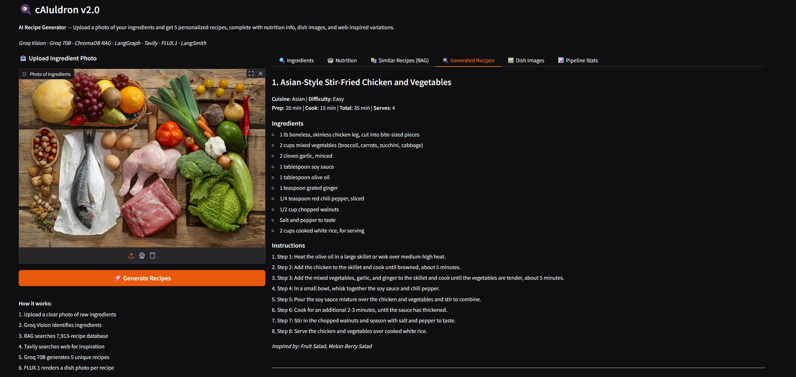

Project Overview
cAIuldron v2 is a cloud-native, multi-agent AI recipe system that transforms a single ingredient photo into five complete, restaurant-quality recipes in 10–20 seconds. The entire pipeline is orchestrated by a LangGraph StateGraph — a directed graph of specialized AI nodes running in sequence and in parallel. Upload one photo and the system detects ingredients via Groq Llama 4 Scout Vision, retrieves similar recipes from a 7,913-recipe ChromaDB RAG knowledge base, searches the live web for inspiration via Tavily, generates 5 Michelin-quality recipes with Groq Llama 3.3 70B, renders AI dish photos with FLUX.1-schnell, and logs every step to LangSmith — all with zero local GPU.

cAIuldron v2 — 6-tab Gradio interface: ingredients, nutrition, RAG, recipes, gallery, pipeline stats
v1 → v2: Evolution
cAIuldron started as a local-model pipeline (v1) using CLIP + DETR for vision and QLoRA fine-tuning of Llama 3.2 1B on a consumer GPU. v2 rebuilt the entire system as a cloud-native multi-agent architecture, eliminating GPU requirements while dramatically improving capability and speed.
| Capability | v1 — Local Models | v2 — Cloud-Native |
|---|---|---|
| Ingredient Detection | CLIP ViT-Base + DETR ResNet-50, 88% F1, 2–3 GB VRAM | Groq Llama 4 Scout 17B Vision API, ~1s, 0 VRAM |
| Recipe Generation | Llama 3.2 1B QLoRA fine-tuned, 92/100 quality | Groq Llama 3.3 70B, 5 recipes in one API call |
| Recipe Knowledge Base | None | ChromaDB RAG — 7,913 recipes, cosine similarity |
| Web Inspiration | None | Tavily API — live web results injected into LLM |
| Dish Image Generation | None | FLUX.1-schnell — 5 concurrent photos per run |
| Agent Orchestration | Sequential Python calls | LangGraph StateGraph with parallel fork/join |
| GPU Requirement | 4–6 GB VRAM minimum | Zero — no local AI model |
| Pipeline Latency | 40–80s | 10–20s |
| UI Tabs | 2 (ingredients, recipes) | 6 (ingredients, nutrition, RAG, recipes, gallery, stats) |
System Architecture: LangGraph Pipeline
The v2 pipeline is a LangGraph StateGraph — a typed directed graph where each node is a specialized AI function passing structured state to the next. RAG search and web search run simultaneously via a parallel fork/join, then both context sources feed into a single Groq 70B recipe generation call.
START
│
▼
detect_ingredients_node ← Groq Llama 4 Scout 17B (Vision API, ~1s)
│
▼
estimate_nutrition_node ← USDA FoodData Central (local JSON, 525 ingredients, <0.1s)
│
├──────────────────────────────┐ [PARALLEL FORK]
▼ ▼
rag_search_node web_search_node
ChromaDB cosine similarity Tavily API (live web)
top-3 from 7,913 recipes 5 recipe inspirations
│ │
└──────────────┬───────────────┘ [PARALLEL JOIN]
│
▼
generate_recipes_node ← Groq Llama 3.3 70B
RAG + Tavily + USDA context → 5 Michelin-quality recipes (JSON)
Cuisine rotation: Asian · Mediterranean · American · Mexican · Italian
│
▼
generate_images_node ← HF FLUX.1-schnell
5 concurrent async HTTP calls → professional food photography 512×512
│
▼
END → Gradio UI (6 tabs)
RecipeState — Typed Pipeline State:
-
Stage 1–2:
image_bytes→detected_ingredients→nutrition_per_ingredient+nutrition_summary -
Stage 3a (parallel):
rag_retrieved_recipes+rag_context_block -
Stage 3b (parallel):
web_search_results+web_context_block -
Stage 4:
recipes— 5 complete recipes with title, cuisine, difficulty, prep/cook time, ≥10 ingredients, ≥8 steps -
Stage 5:
image_bytesper recipe — 5 concurrent FLUX.1-schnell PNG images
Key Features
Groq Vision Detection
Encodes ingredient photo as base64 JPEG and sends to Groq Llama 4 Scout 17B Vision API. Returns a parsed JSON ingredient list (max 8) in ~1 second — no local GPU, no model download.
ChromaDB RAG Knowledge Base
7,913 RecipeNLG recipes indexed with all-MiniLM-L6-v2 embeddings in a persistent ChromaDB vector store (cosine similarity). Retrieves top-3 most similar recipes as LLM context, built once in ~2 minutes, reloaded in ~1 second.
Tavily Live Web Search
Searches the live web for real-world recipe inspiration using the detected ingredients as query. Returns up to 5 results including Tavily's answer summary, merged into the LLM prompt alongside RAG context for maximum recipe diversity.
Michelin-Quality Recipe Generation
A single Groq Llama 3.3 70B API call produces all 5 recipes as structured JSON — each with ≥10 precisely measured ingredients and ≥8 professional cooking steps including temperatures, timing cues, and plating tips across 5 cuisine types.
Concurrent AI Dish Photos
5 FLUX.1-schnell images dispatched simultaneously via httpx + asyncio.gather through HF Inference Router API. Professional food photography prompts at 512×512 PNG — all 5 images generated concurrently rather than sequentially.
LangSmith Observability
Full pipeline trace logged to LangSmith automatically via LangChain integration — per-node timing, inputs, and outputs for all 6 LangGraph nodes visible in the LangSmith dashboard. Trace link surfaced in Gradio's Pipeline Stats tab.
Demo: Full Pipeline Walkthrough
Below are real results from the cAIuldron v2 system processing an ingredient photo through all 6 LangGraph nodes — from Groq Vision detection to FLUX.1 dish image generation.
1. Ingredient Detection (Groq Vision, ~1s)

Groq Llama 4 Scout 17B Vision API detects ingredients in ~1s and returns a structured JSON list
2. USDA Nutrition Lookup (<0.1s)

Per-ingredient USDA macro table: calories, protein, fat, carbs per 100g (525 ingredients, fuzzy match)
3. ChromaDB RAG — Similar Recipes

Top-3 ChromaDB matches with cuisine, difficulty, cook time, and cosine similarity score
4. Generated Recipes (Groq Llama 3.3 70B)

5 complete recipes generated in one Groq API call — each with cuisine, difficulty, timing, ≥10 ingredients, ≥8 steps
5. AI Dish Photos (FLUX.1-schnell)

5 FLUX.1-schnell food photos generated concurrently via asyncio.gather — professional food photography style
6. Pipeline Stats (LangSmith)

Per-node timing and LangSmith trace link — full observability across all 6 pipeline stages
Technical Implementation
1. Groq Vision — Ingredient Detection
- Encodes image as base64 JPEG and sends to Groq API with a culinary expert system prompt
-
Model:
meta-llama/llama-4-scout-17b-16e-instructvia Groq API, JSON-only output, max 8 ingredients -
Regex fallback parses
[...]from raw response for robustness against malformed JSON - v1 equivalent: CLIP (ViT-Base) + DETR (ResNet-50) two-stage zero-shot classification, 88% F1, 525+ classes — replaced by single API call at 10× speed
2. ChromaDB RAG Pipeline
-
Index: 7,913 recipes from RecipeNLG embedded with
all-MiniLM-L6-v2(384-dimensional, runs on CPU), HNSW cosine distance - Embedding format: "Recipe: {title}. Cuisine: {cuisine}. Main ingredients: {tags}." — instructions excluded to keep similarity focused on ingredients
- Query: top-3 results with similarity ≥ 0.25, formatted as context block injected into recipe generation prompt
-
Index built once (~2–3 min), persists to
.chroma_db/, reloads in ~1s on subsequent runs
3. LangGraph Parallel Execution
-
RecipeStateTypedDict usesAnnotatedreducers for safe parallel writes — preventsInvalidUpdateErrorwhen both fork branches write simultaneously - RAG search and Tavily web search run in parallel via LangGraph's native fork/join — both complete before recipe generation begins
-
Graph compiled with
StateGraphbuilder:add_node+add_edge+add_conditional_edgesfor parallel branching
4. Recipe Generation Prompt Design
- System: Michelin-star chef persona, strict JSON schema, min 10 ingredients + 8 steps, must include ≥1 flavour-building step
- User context: RAG top-3 (~400 tokens) + Tavily results (~300 tokens) + USDA nutrition (~100 tokens) + cuisine/difficulty targets
-
Single API call returns all 5 as
{"recipes": [...]}JSON — cuisine rotation: Asian · Mediterranean · American · Mexican · Italian - v1 equivalent: QLoRA fine-tuned Llama 3.2 1B, training only 0.23% of parameters (2.8M), 92/100 quality on 7,913 curated recipes
AI Model Ecosystem
| Component | Model | API | Speed | VRAM |
|---|---|---|---|---|
| Ingredient Detection | Llama 4 Scout 17B (Vision) | Groq | ~1–2s | 0 GB |
| Recipe Generation | Llama 3.3 70B Versatile | Groq | 5–15s | 0 GB |
| Recipe Embedding | all-MiniLM-L6-v2 | Local / CPU | Index once | 0 GB |
| Dish Image Generation | FLUX.1-schnell | HF Inference API | ×5 concurrent | 0 GB |
| Nutrition Lookup | USDA FoodData Central | Local JSON | <0.1s | — |
Technology Stack
Project Poster